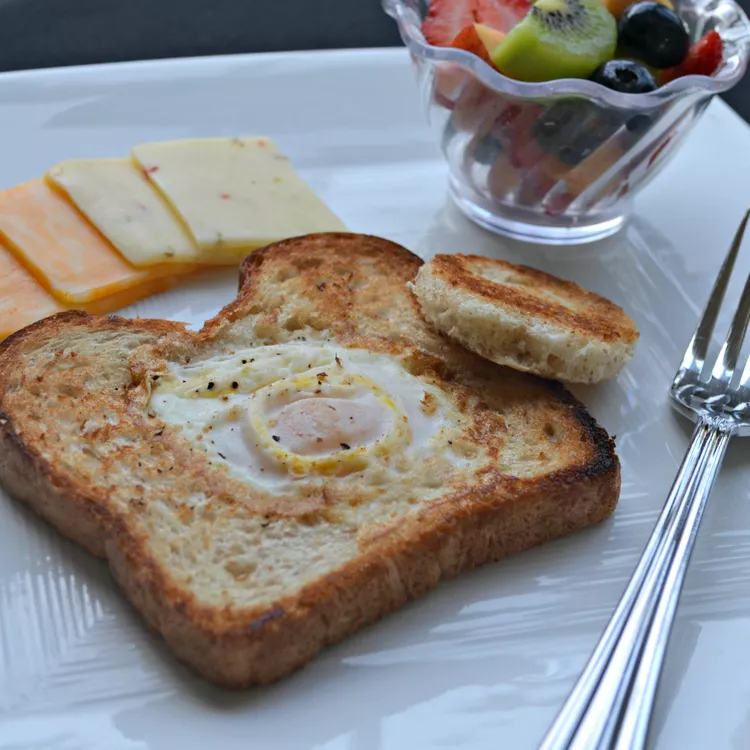

Sunshine Toasts

Description
Oh geez, we're so toasted!
Ingredients
- 1 slice of bread;
- 2 tablespoons of butter, melted;
- 1 large egg;
- salt to taste;
Steps
- Cut a circle in the center of bread with a cookie cutter. Brush melted butter on both sides of bread.
- Heat a small skillet over medium heat. Add bread and cook until golden brown, about 2 minutes.
- Flip, then crack egg into the hole. Cook until egg is set on the bottom, about 1 minute; season with salt.
- Cover, reduce the heat to low, and cook until egg white is completely set, 3 to 4 minutes.